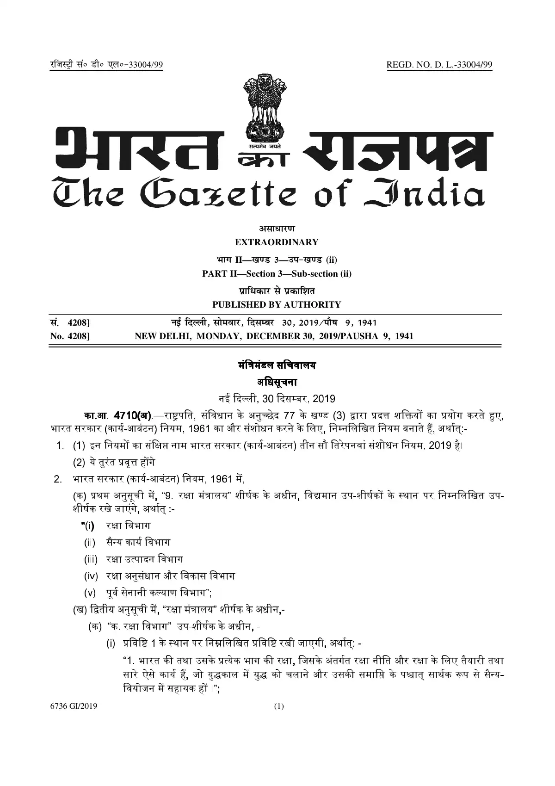
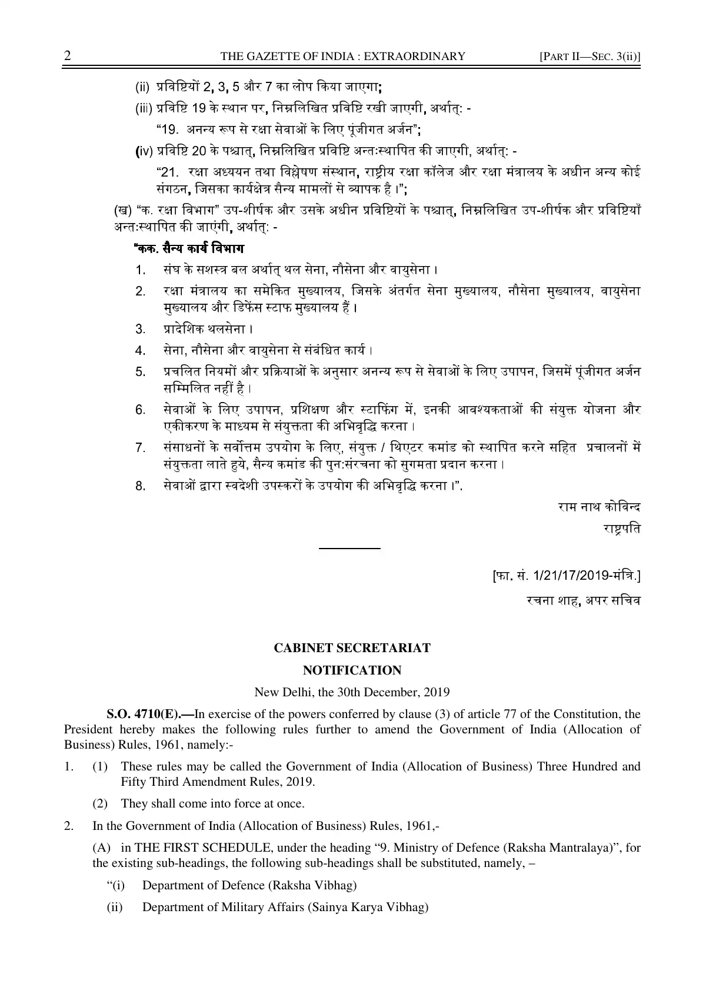
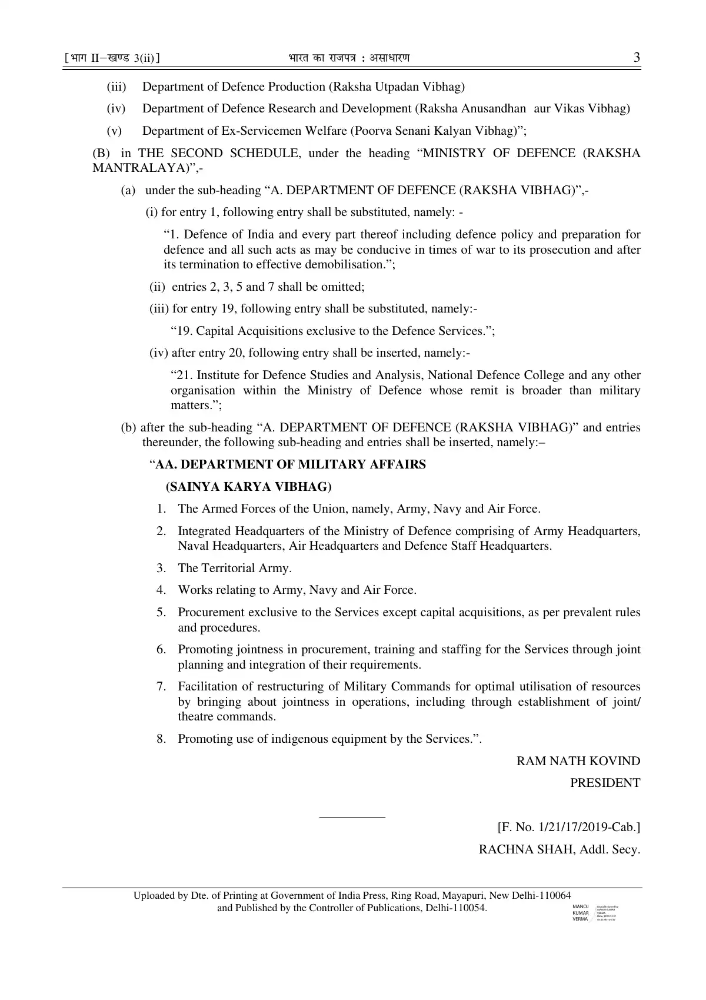

Amendment #353 (S.O. 4710(E), 2019)
6 changes: 1 to the First Schedule, 5 to the Second Schedule. 6 applied
The order, page by page
Page 1 of 3

Page 2 of 3

1Schedule 1 › Ministry of Defence
- i. Department of Defence
- ii. Department of Military Affairs
- iii. Department of Defence Production
- iv. Department of Defence Research and Development
- v. Department of Ex-Servicemen Welfare
applied at schedule 1 › ministry 9 in the Rules after #353
read page break
Page 3 of 3

23456Schedule 2 › MINISTRY OF DEFENCE › DEPARTMENT OF DEFENCE › entry 1
- 1. Defence of India and every part thereof including defence policy and preparation for defence and all such acts as may be conducive in times of war to its prosecution and after its termination to effective demobilisation.
applied at schedule 2 › ministry MINISTRY OF DEFENCE › department A › entry 1 in the Rules after #353
Schedule 2 › MINISTRY OF DEFENCE › DEPARTMENT OF DEFENCE › entry 2; Schedule 2 › MINISTRY OF DEFENCE › DEPARTMENT OF DEFENCE › entry 3; Schedule 2 › MINISTRY OF DEFENCE › DEPARTMENT OF DEFENCE › entry 5; Schedule 2 › MINISTRY OF DEFENCE › DEPARTMENT OF DEFENCE › entry 7
applied at schedule 2 › ministry MINISTRY OF DEFENCE › department A › entry 2 in the Rules after #353
Schedule 2 › MINISTRY OF DEFENCE › DEPARTMENT OF DEFENCE › entry 19
- 19. Capital Acquisitions exclusive to the Defence Services.
applied at schedule 2 › ministry MINISTRY OF DEFENCE › department A › entry 19 in the Rules after #353
after Schedule 2 › MINISTRY OF DEFENCE › DEPARTMENT OF DEFENCE › entry 20
- 21. Institute for Defence Studies and Analysis, National Defence College and any other organisation within the Ministry of Defence whose remit is broader than military matters.
applied at schedule 2 › ministry MINISTRY OF DEFENCE › department A › entry 21 in the Rules after #353
after Schedule 2 › MINISTRY OF DEFENCE › DEPARTMENT OF DEFENCE
- AA. DEPARTMENT OF MILITARY AFFAIRS
- 1. The Armed Forces of the Union, namely, Army, Navy and Air Force.
- 2. Integrated Headquarters of the Ministry of Defence comprising of Army Headquarters Naval Headquarters, Air Headquarters and Defence Staff Headquarters.
- 3. The Territorial Army.
- 4. Works relating to Army, Navy and Air Force.
- 5. Procurement exclusive to the Services except capital acquisitions, as per prevalent rules and procedures.
and 3 more
- 6. Promoting jointness in procurement, training and staffing for the Services through joint planning and integration of their requirements.
- 7. Facilitation of restructuring of Military Commands for optimal utilisation of resources by bringing about jointness in operations, including through establishment of joint/ theatre commands.
- 8. Promoting use of indigenous equipment by the Services.
applied at schedule 2 › ministry MINISTRY OF DEFENCE › department AA in the Rules after #353
How this document was read
From the Government of India (Allocation of Business) Rules, 1961 and their amendments, as published by the Cabinet Secretariat (cabsec.gov.in), read by orgpedia. The readings of the older scanned gazettes have known gaps.